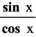
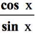
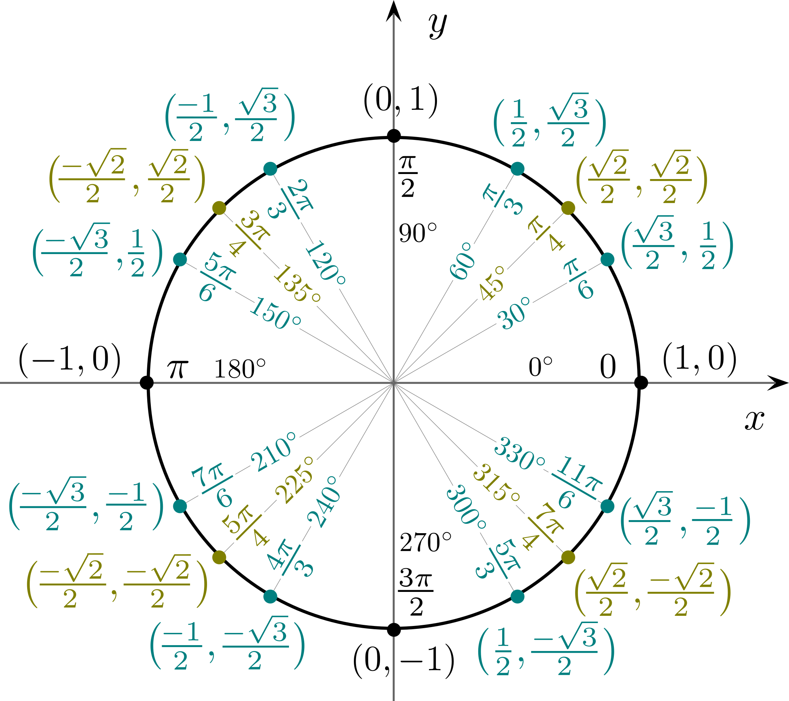
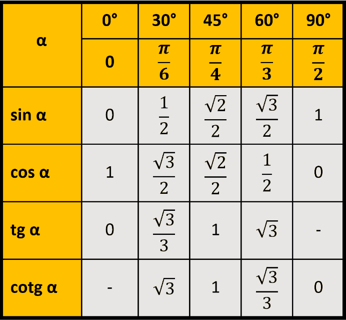

Elektronická učebnica matematiky
Elektronická učebnica matematiky
- Funkcie
- Kombinatorika
Elektronická učebnica matematiky Sínus je funkcia, ktorá každému reálnemu číslu x priradí číslo yA => sin x = yA
Kosínus je funkcia, ktorá každému reálnemu číslu x priradí číslo xA => cos x = xA
Tangens je funkcia, ktorá každému reálnemu číslu x, pre ktoré cosx =/= 0, priradí číslo , teda tgx =
Tangens je funkcia, ktorá každému reálnemu číslu x, pre ktoré sinx =/= 0, priradí číslo , teda tgx =
Často používané hodnoty goniometrických funkcií ilustruje tento obrázok jednotkovej kružnice – x-ová súradnica bodu zodpovedá hodnote cos daného uhla, y-ová súradnica bodu zodpovedá hodnote sin daného uhla.
 Vlastnosti goniometrických funkcií
Pre obe funkcie sin(x) a cos(x) platí:
Pre funkciu sin(x) platí:
Pre funkciu cos(x) platí:
Pre funkciu tan(x) platí: